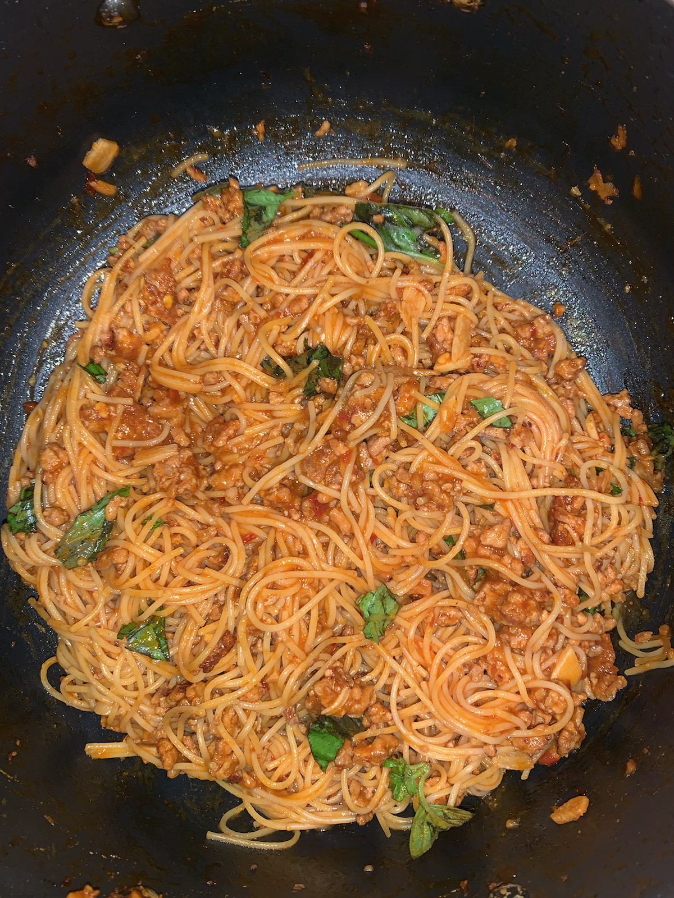

Pork Sambal Noodles
Ingredients:
- 1lb Ground Pork
- 1 box Thin Spaghetti Noodles
- 2" Ginger
- 8 Garlic Cloves
- 2 Tablespoons Sugar
- 2 Sprigs Basil
- 1/3 Cup Sambal (Hot Chili Paste)
- 1/4 Cup Soy Sauce
- 1/4 Cup Rice Vinegar
- 2 Tablespoons Butter
- 2 Tablespoons Tomatoe Paste
- Salt to Taste
- Drizzle Extra Virgin Olive Oil
Directions:
- Bring salted water to boil and cook Spaghetti
- In seperate pan, saute minced garlic and ginger with EVOO
- Add half of pork to saute pan, cook until well-browned
- Add rest of the pork and sugar, and mix thoroughly
- Add tomatoe paste and basil spring, stir until darkened
- Add Sambal, soy sauce, rice vinegar, and 2 cups of water
- Bring to a simmer and reduce heat
- Cook until sauce is thickened, about 20-30 mins
- Combine sauce, butter, and spaghetti noodles
- Garnish with extra basil
Return Home